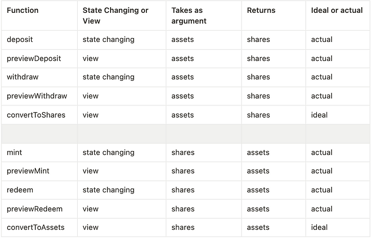
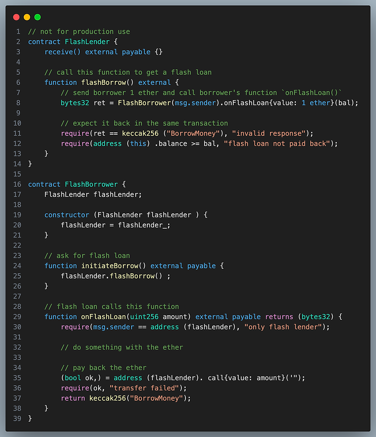
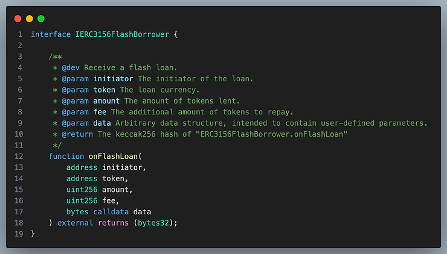
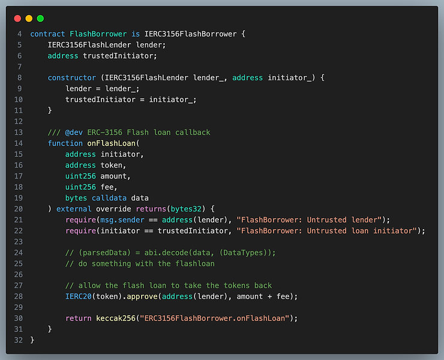
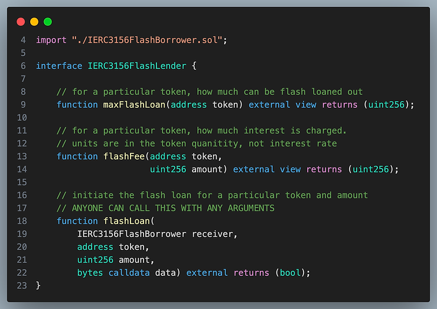
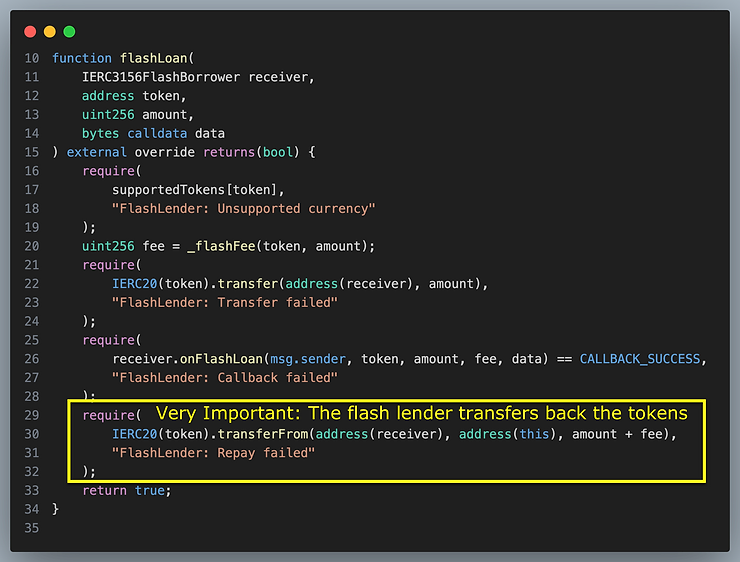
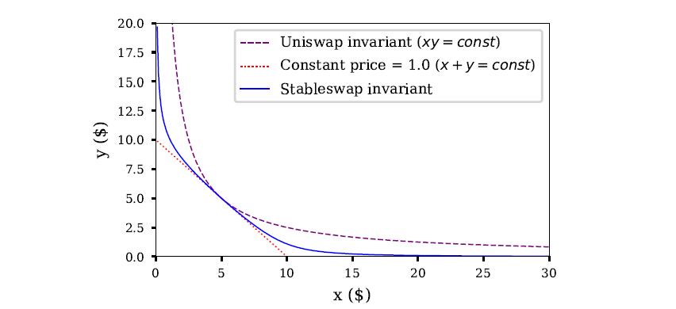

>> Uniswap-V2
Hello WEB3, in this blog post i have tried my best to explain the UNISWAP-V2 protocol. Uniswap V2 can create an exchange market between any two ERC-20 tokens. In this blog post we will go over the source code for the Uniswap-V2 Core and Uniswap-V2 Periphery contracts that implement this protocol and see why they are written this way.
Uniswap is an automated liquidity protocol powered by a constant product formula and implemented in a system of non-upgradeable smart contracts on the Ethereum blockchain. Core contracts provide fundamental safety guarantees for all parties interacting with Uniswap. Periphery contracts interact with one or more core contracts but are not themselves part of the core.
I have studied many resources to understand this protocol, that are mentioned at below the post. I have tried my best to explain it.
>> Introduction
Before diving into the protocol we have to known about 3 things.
- ERC-4626 vaults
- ERC-3156 Flash Loans
- Automated Market Maker(AMM)
Uniswap does not directly use ERC 4626 or ERC 3156. However, it is helpful to be familiar with those standards as Uniswap uses similar concepts. Studying ERC-4626 and ERC-3156 before diving into the Uniswap V2 protocol can provide a broader understanding of key concepts in decentralized finance (DeFi) that enhance one's grasp of how Uniswap and other DeFi protocols operate. Both ERC-4626 and ERC-3156 contribute to the composability of DeFi protocols. By understanding these standards, you can see how Uniswap V2 fits into the larger DeFi ecosystem and interacts with other protocols seamlessly. Automated Market Makers (AMMs) are a crucial component of the Uniswap V2 protocol, providing a decentralized, permissionless, and efficient mechanism for trading cryptocurrencies.
So we are understanding the concepts of ERC-4626 vaults, ERC-3156 falsh loans and Automated Market Makers (AMMs).
#1 ERC-4626 Vaults
ERC-4626 is a standard for tokenized vaults used for ERC-20 tokens, which are smart contracts that manage pooled funds. These vaults can represent various yield-generating strategies, such as lending, staking, or other DeFi activities. EIP-4626 standard allows for the implementation of a standard API for tokenized Vaults representing shares of a single underlying EIP-20 token. This standard is an extension on the EIP-20 token that provides basic functionality for depositing and withdrawing tokens and reading balances.

>> Specification
All EIP-4626 tokenized Vaults msut implement EIP-20 to represent shares. If a Vault is to be non-transferrable, it may revert on calls to transfer or transferFrom. The EIP-20 operations balanceOf, transfer, totalSupply, etc. operate on the Vault “shares” which represent a claim to ownership on a fraction of the Vault’s underlying holdings. All EIP-4626 tokenized Vaults must implement EIP-20’s optional metadata extensions. The name and symbol functions should reflect the underlying token’s name and symbol in some way. EIP-4626 tokenized Vaults may implement EIP-2612 to improve the UX of approving shares on various integrations.
>> ERC-4626 Motivation
Let’s use a real example to motivate the design.
- Let’s say we all own a company, or a liquidity pool, that earns a stablecoin DAI periodically. The stablecoin DAI is the asset in this case.
- One inefficient way we could distribute the earnings is to push out DAI to each of the holders of the company on a pro-rata basis. But this would be extremely expensive gas wise.
- Similarly, if we were to update everyone’s balance inside a smart contract, that would be expensive too.
- Instead, this is how the workflow would work with ERC4626.
- Let’s say you and nine friends get together and each deposit 10 DAI each into the ERC4626 vault (100 DAI total). You get back one share.
- So far so good. Now your company earns 10 more DAI, so the total DAI inside the vault is now 110 DAI.
- When you trade your share back for your part of the DAI, you don’t get 10 DAI back, but 11.
- Now there is 99 DAI in the vault, but 9 people to share it among. If they were to each withdraw, they would get 11 DAI each.
- Note how efficient this is. When someone makes a trade, instead of updating everyones shares one-by-one, only the total supply of shares and the amount of assets in the contract changes.
- ERC4626 does not have to be used in this manner. You can have an arbitrary mathematical formula that determines the relationship between shares and assets. For example, you could say every time someone withdraws the asset, they also have to pay some sort of a tax that depends on the block timestamp or something like that.
- The ERC 4626 standard provides a gas efficient means for executing very common DeFi accounting practices.
>> ERC-4626 Smart Contract
>> ERC-4626 functions
>> asset() -> address
The address of the underlying token used for the Vault for accounting, depositing, and withdrawing. Assest be an ERC-20 token contract.
>> decimals() -> unit8
Decimals are computed by adding the decimal offset on top of the underlying asset's decimals. This "original" value is cached during construction of the vault contract.
>> totalAssests() -> unit256
Total amount of the underlying asset that is “managed” by Vault. SHOULD include any compounding that occurs from yield. MUST be inclusive of any fees that are charged against assets in the Vault.
>> convertToShares(uint256 assets) -> unit256
The amount of shares that the Vault would exchange for the amount of assets provided, in an ideal scenario where all the conditions are met. MUST NOT be inclusive of any fees that are charged against assets in the Vault. MUST NOT show any variations depending on the caller. MUST NOT reflect slippage or other on-chain conditions, when performing the actual exchange. MUST NOT revert unless due to integer overflow caused by an unreasonably large input. MUST round down towards 0. This calculation MAY NOT reflect the “per-user” price-per-share, and instead should reflect the “average-user’s” price-per-share, meaning what the average user should expect to see when exchanging to and from.
>> convertToAssets(uint256 shares) -> uint256
The amount of assets that the Vault would exchange for the amount of shares provided, in an ideal scenario where all the conditions are met. MUST NOT be inclusive of any fees that are charged against assets in the Vault. MUST NOT show any variations depending on the caller. MUST NOT reflect slippage or other on-chain conditions, when performing the actual exchange. MUST NOT revert unless due to integer overflow caused by an unreasonably large input. MUST round down towards 0. This calculation MAY NOT reflect the “per-user” price-per-share, and instead should reflect the “average-user’s” price-per-share, meaning what the average user should expect to see when exchanging to and from.
>> maxDeposit() -> uint256
Maximum amount of the underlying asset that can be deposited into the Vault for the receiver, through a deposit call. MUST return the maximum amount of assets deposit would allow to be deposited for receiver and not cause a revert, which MUST NOT be higher than the actual maximum that would be accepted (it should underestimate if necessary). This assumes that the user has infinite assets, i.e. MUST NOT rely on balanceOf of asset. MUST factor in both global and user-specific limits, like if deposits are entirely disabled (even temporarily) it MUST return 0. MUST return 2 ** 256 - 1 if there is no limit on the maximum amount of assets that may be deposited.
>> previewDeposit(uint256 assets) -> uint256
Allows an on-chain or off-chain user to simulate the effects of their deposit at the current block, given current on-chain conditions. MUST return as close to and no more than the exact amount of Vault shares that would be minted in a deposit call in the same transaction. I.e. deposit should return the same or more shares as previewDeposit if called in the same transaction. MUST NOT account for deposit limits like those returned from maxDeposit and should always act as though the deposit would be accepted, regardless if the user has enough tokens approved, etc. MUST be inclusive of deposit fees. Integrators should be aware of the existence of deposit fees. MUST NOT revert due to vault specific user/global limits. MAY revert due to other conditions that would also cause deposit to revert. Note that any unfavorable discrepancy between convertToShares and previewDeposit SHOULD be considered slippage in share price or some other type of condition, meaning the depositor will lose assets by depositing.
>> deposit(uint256 assets, address receiver) -> uint256
Mints shares Vault shares to receiver by depositing exactly assets of underlying tokens. MUST emit the Deposit event. MUST support EIP-20 approve / transferFrom on asset as a deposit flow. MAY support an additional flow in which the underlying tokens are owned by the Vault contract before the deposit execution, and are accounted for during deposit. MUST revert if all of assets cannot be deposited (due to deposit limit being reached, slippage, the user not approving enough underlying tokens to the Vault contract, etc). Note that most implementations will require pre-approval of the Vault with the Vault’s underlying asset token.
>> maxMint() -> uint256
Maximum amount of shares that can be minted from the Vault for the receiver, through a mint call. MUST return the maximum amount of shares mint would allow to be deposited to receiver and not cause a revert, which MUST NOT be higher than the actual maximum that would be accepted (it should underestimate if necessary). This assumes that the user has infinite assets, i.e. MUST NOT rely on balanceOf of asset. MUST factor in both global and user-specific limits, like if mints are entirely disabled (even temporarily) it MUST return 0. MUST return 2 ** 256 - 1 if there is no limit on the maximum amount of shares that may be minted.
>> previewMint(uint256 shares) -> uint256
Allows an on-chain or off-chain user to simulate the effects of their mint at the current block, given current on-chain conditions. MUST return as close to and no fewer than the exact amount of assets that would be deposited in a mint call in the same transaction. I.e. mint should return the same or fewer assets as previewMint if called in the same transaction. MUST NOT account for mint limits like those returned from maxMint and should always act as though the mint would be accepted, regardless if the user has enough tokens approved, etc. MUST be inclusive of deposit fees. Integrators should be aware of the existence of deposit fees. MUST NOT revert due to vault specific user/global limits. MAY revert due to other conditions that would also cause mint to revert. Note that any unfavorable discrepancy between convertToAssets and previewMint SHOULD be considered slippage in share price or some other type of condition, meaning the depositor will lose assets by minting.
>> mint(uint256 shares, address receiver) -> uint256
Mints exactly shares Vault shares to receiver by depositing assets of underlying tokens. MUST emit the Deposit event. MUST support EIP-20 approve / transferFrom on asset as a mint flow. MAY support an additional flow in which the underlying tokens are owned by the Vault contract before the mint execution, and are accounted for during mint. MUST revert if all of shares cannot be minted (due to deposit limit being reached, slippage, the user not approving enough underlying tokens to the Vault contract, etc). Note that most implementations will require pre-approval of the Vault with the Vault’s underlying asset token.
>> maxWithdraw(address owner) -> uint256
aximum amount of the underlying asset that can be withdrawn from the owner balance in the Vault, through a withdraw call. MUST return the maximum amount of assets that could be transferred from owner through withdraw and not cause a revert, which MUST NOT be higher than the actual maximum that would be accepted (it should underestimate if necessary). MUST factor in both global and user-specific limits, like if withdrawals are entirely disabled (even temporarily) it MUST return 0.
>> previewWithdraw(uint256 assets) -> uint256
Allows an on-chain or off-chain user to simulate the effects of their withdrawal at the current block, given current on-chain conditions. MUST return as close to and no fewer than the exact amount of Vault shares that would be burned in a withdraw call in the same transaction. I.e. withdraw should return the same or fewer shares as previewWithdraw if called in the same transaction. MUST NOT account for withdrawal limits like those returned from maxWithdraw and should always act as though the withdrawal would be accepted, regardless if the user has enough shares, etc. MUST be inclusive of withdrawal fees. Integrators should be aware of the existence of withdrawal fees. MUST NOT revert due to vault specific user/global limits. MAY revert due to other conditions that would also cause withdraw to revert. Note that any unfavorable discrepancy between convertToShares and previewWithdraw SHOULD be considered slippage in share price or some other type of condition, meaning the depositor will lose assets by depositing.
>> withdraw(uint256 assets, address receiver, address owner) -> uint256
Burns shares from owner and sends exactly assets of underlying tokens to receiver. MUST emit the Withdraw event. MUST support a withdraw flow where the shares are burned from owner directly where owner is msg.sender. MUST support a withdraw flow where the shares are burned from owner directly where msg.sender has EIP-20 approval over the shares of owner. MAY support an additional flow in which the shares are transferred to the Vault contract before the withdraw execution, and are accounted for during withdraw. SHOULD check msg.sender can spend owner funds, assets needs to be converted to shares and shares should be checked for allowance. MUST revert if all of assets cannot be withdrawn (due to withdrawal limit being reached, slippage, the owner not having enough shares, etc). Note that some implementations will require pre-requesting to the Vault before a withdrawal may be performed. Those methods should be performed separately.
>> maxRedeem(address owner) -> uint256
Maximum amount of Vault shares that can be redeemed from the owner balance in the Vault, through a redeem call. MUST return the maximum amount of shares that could be transferred from owner through redeem and not cause a revert, which MUST NOT be higher than the actual maximum that would be accepted (it should underestimate if necessary). MUST factor in both global and user-specific limits, like if redemption is entirely disabled (even temporarily) it MUST return 0.
>> previewRedeem(uint256 shares) -> uint256
Allows an on-chain or off-chain user to simulate the effects of their redeemption at the current block, given current on-chain conditions. MUST return as close to and no more than the exact amount of assets that would be withdrawn in a redeem call in the same transaction. I.e. redeem should return the same or more assets as previewRedeem if called in the same transaction. MUST NOT account for redemption limits like those returned from maxRedeem and should always act as though the redemption would be accepted, regardless if the user has enough shares, etc. MUST be inclusive of withdrawal fees. Integrators should be aware of the existence of withdrawal fees. MUST NOT revert due to vault specific user/global limits. MAY revert due to other conditions that would also cause redeem to revert. Note that any unfavorable discrepancy between convertToAssets and previewRedeem SHOULD be considered slippage in share price or some other type of condition, meaning the depositor will lose assets by redeeming.
>> redeem(uint256 shares, address receiver, address owner) -> uint256
Burns exactly shares from owner and sends assets of underlying tokens to receiver. MUST emit the Withdraw event. MUST support a redeem flow where the shares are burned from owner directly where owner is msg.sender. MUST support a redeem flow where the shares are burned from owner directly where msg.sender has EIP-20 approval over the shares of owner. MAY support an additional flow in which the shares are transferred to the Vault contract before the redeem execution, and are accounted for during redeem. SHOULD check msg.sender can spend owner funds using allowance. MUST revert if all of shares cannot be redeemed (due to withdrawal limit being reached, slippage, the owner not having enough shares, etc). Note that some implementations will require pre-requesting to the Vault before a withdrawal may be performed. Those methods should be performed separately.
>> Summary of functions

>> ERC-4626 Events
ERC4626 has only two events in addition to the ERC20 events it inherits: Deposit and Withdraw.
Must be emitted when tokens are deposited into the Vault via the mint and deposit methods.
WithdrawMust be emitted when shares are withdrawn from the Vault in redeem or withdraw methods.
event Deposit(
address indexed sender,
address indexed owner,
uint256 assets,
uint256 shares
)
event Withdraw(
address indexed sender,
address indexed receiver,
address indexed owner,
uint256 assets,
uint256 share
)
>> ERC-4626 Vault Maths
The Vault has a few functions that are used to calculate the total assets and total shares. For depositing or withdrawing tokens the ratio between the shares and the underlying tokens, which reflects the value of the underlying tokens relative to the shares.
In an ERC-4626 vault, the mathematics of depositing and withdrawing ensures that the value of the shares accurately reflects the value of the underlying assets. When depositing, users receive shares proportional to the amount of underlying tokens they deposit. When withdrawing, users receive underlying tokens proportional to the number of shares they redeem. This system maintains a fair and transparent value exchange, making ERC-4626 a robust standard for tokenized vaults in DeFi.
>> How many Shares to mint for given Assests

>> How many Assests to give for given Shares

>> Problems with slippage
Any token swapping protocol has an issue where the user might not get back the amount of tokens they were expecting.
For example, with automated market makers, a large trade might use up the liquidity and cause the price to move substantially.
Another issue is a transaction getting frontrun or experiencing a sandwich attack. In the examples above, we've assumed the ERC4626 contract maintains a one-to-one relationship between asset and shares regardless of the supply, but the ERC4626 standard does not dictate how the pricing algorithm should work.
For example, suppose we make the amount of shares issued a function of the square root of the assets deposited. In that case, whoever deposits first will get a larger amount of shares. This could encourage opportunistic traders to frontrun deposit orders and force the next buyer to pay a larger amount of the asset for the same amount of shares.
The defense against this is simple: the contract interacting with an ERC4626 should measure the amount of shares it received during a deposit (and assets during a withdraw) and revert if it does not receive the quantity expected within a certain slippage tolerance. This is a standard design pattern to deal with slippage issues.
>> ERC4626 inflation attack
Although ERC4626 is agnostic to the algorithm that translates prices to shares, most implementations use a linear relationship. If there are 10,000 assets, and 100 shares, then 100 assets should result in 1 share. But what happens if someone sends 99 assets? It will round down to zero and they get zero shares. Of course no-one would intentionally throw away their money like this. However, an attacker can frontrun a trade by donating assets to the vault.
If an attacker donates money to the vault, one share is suddenly worth more than it was initially. If there are 10,000 assets in the vault corresponding to 100 shares, and the attacker donates 20,000 assets, then one share is suddenly worth 300 assets instead of 100 assets. When the victim’s trade trades in assets to get back shares, they suddenly get a lot fewer shares — possibly zero.
There are three defenses:
- Revert if the amount received is not within a slippage tolerance (described earlier).
- The deployer should deposit enough assets into the pool such that doing this inflation attack would be too expensive.
- Add "virtual liquidity" to the vault so the pricing behaves as if the pool had been deployed with enough assets.
When calculating the amount of shares a depositor receives, the total supply is artificially inflated (at a rate the programmer specifies in _decimalsOffset()).
Let's walk through an example. By way of reminder, here is what the variables above mean:
- totalSupply() = total number of shares issued
- totalAssets() = the balance of assets held by the ERC4626
- assets = the amount of assets the user is depositing
The formula is
shares_received = assets_deposited * totalSupply() / totalAssets();
There is some implementation details for rounding in favor of the pool and adding 1 to totalAssets() to ensure we don't divide by zero if the pool is empty.
Let's say we have the following numbers:
- assets_deposited = 1,000
- totalSupply() = 1,000
- totalAssets() = 999,999 (the formula adds 1, so we will set it this way to make the number nice)
In that case, the shares the user will get is 1,000 x 1,000 ÷ 1,000,000, or exactly 1.
This is obviously very fragile. If the attacker frontruns the deposit of 1,000 shares and deposits assets, then the victim will get zero back, because 1 million divided by a number larger than 1 million is zero in integer division.
How does virtual liquidity solve this? We would set _decimalOffset() to be 3, so that way totalSupply() gets 1,000 added to it.
Effectively, we are making the numerator 1,000 times larger. This forces the attacker to make a donation 1,000 times as large, which disincentivizes them from conducting the attack.
>> Example for Inflation Attack

- When a depositor wants to be the initial depositor, sends 10 USDC to the vault.
- Attacker see’s that tx and front runs with calling deposit with 1 USDC. So, now the attacker becomes the initial depositor and totalSupply becomes 1. Attacker receives 1 share.
- And now attacker donates equal amount of USDC that user transfer to the vault without calling the deposit function. So, the totalSupply won’t be updated. totalSupply still 1. And the totalBalance becomes 10 USDC.
- Now the else block of the deposit executes and number of shares that mints to the user becomes 0.
- So, the shares are that minted are only to attacker. So attacker owns the whole ownership on vault. Attacker can withdraw all the balance in the vault now.
>> Security Considerations
Fully permissionless use cases could fall prey to malicious implementations which only conform to the interface but not the specification. It is recommended that all integrators review the implementation for potential ways of losing user deposits before integrating.
If implementors intend to support EOA account access directly, they should consider adding an additional function call for deposit/mint/withdraw/redeem with the means to accommodate slippage loss or unexpected deposit/withdrawal limits, since they have no other means to revert the transaction if the exact output amount is not achieved. The methods totalAssets, convertToShares and convertToAssets are estimates useful for display purposes, and do not have to confer the exact amount of underlying assets their context suggests.
The preview methods return values that are as close as possible to exact as possible. For that reason, they are manipulable by altering the on-chain conditions and are not always safe to be used as price oracles. This specification includes convert methods that are allowed to be inexact and therefore can be implemented as robust price oracles. For example, it would be correct to implement the convert methods as using a time-weighted average price in converting between assets and shares.
Integrators of EIP-4626 Vaults should be aware of the difference between these view methods when integrating with this standard. Additionally, note that the amount of underlying assets a user may receive from redeeming their Vault shares (previewRedeem) can be significantly different than the amount that would be taken from them when minting the same quantity of shares (previewMint). The differences may be small (like if due to rounding error), or very significant (like if a Vault implements withdrawal or deposit fees, etc). Therefore integrators should always take care to use the preview function most relevant to their use case, and never assume they are interchangeable.
Finally, EIP-4626 Vault implementers should be aware of the need for specific, opposing rounding directions across the different mutable and view methods, as it is considered most secure to favor the Vault itself during calculations over its users:
- If (1) it’s calculating how many shares to issue to a user for a certain amount of the underlying tokens they provide or (2) it’s determining the amount of the underlying tokens to transfer to them for returning a certain amount of shares, it should round down.
- If (1) it’s calculating the amount of shares a user has to supply to receive a given amount of the underlying tokens or (2) it’s calculating the amount of underlying tokens a user has to provide to receive a certain amount of shares, it should round up.
The only functions where the preferred rounding direction would be ambiguous are the convertTo functions. To ensure consistency across all EIP-4626 Vault implementations it is specified that these functions MUST both always round down. Integrators may wish to mimic rounding up versions of these functions themselves, like by adding 1 wei to the result.
Although the convertTo functions should eliminate the need for any use of an EIP-4626 Vault’s decimals variable, it is still strongly recommended to mirror the underlying token’s decimals if at all possible, to eliminate possible sources of confusion and simplify integration across front-ends and for other off-chain users.
>> Real life examples of share / asset accounting
Earlier versions of Compound minted what they called c-tokens to users who supplied liquidity. For example, if you deposited USDC, you would get a separate cUSDC (Compound USDC) back. When you decided to stop lending, you would send back your cUSDC to compound (where it would be burned) then get your pro-rata share of the USDC lending pool.
Uniswap used LP tokens as “shares” to represent how much liquidity someone had put into a pool, (and how much they could withdraw pro-rata) when they redeemed the LP tokens for the underlying asset.
#2 ERC-3156 Flash Loan
A flash loan is a smart contract transaction in which a lender smart contract lends assets to a borrower smart contract with the condition that the assets are returned, plus an optional fee, before the end of the transaction. This ERC specifies interfaces for lenders to accept flash loan requests, and for borrowers to take temporary control of the transaction within the lender execution. The process for the safe execution of flash loans is also specified.

If the borrower does not pay back the loan, therequire statement with the message “flash not paid back” will cause the entire transaction to revert.
- Only contracts can work with flashloans
- Flash loans do not need collateral
>> What are flashloans used for?
The most common use case for a flash loan is to do an arbitrage trade. For example, if Ether is trading for $1,200 in one pool and $1,300 in another DeFi application, it would be desirable to buy the Ether in the first pool and sell it in the second pool for a $100 profit. However, you need to money to buy the Ether in the first place. A flash loan is the ideal solution for it, as you don’t need $1,200 lying around. You can borrow $1,200 of Ether, sell it for $1,300, and pay back the $1,200 keeping a $100 profit for yourself (minus fees).
Refinancing LoansFor regular DeFi loans, they typically require some kind of collateral. For example, if you were borrowing $10,000 in stable coins, you would need to deposit $15,000 of Ether as collateral.
If your stable coins loan had a 5% interest and you wanted to refinance with another lending smart contract at 4%, you would need to
- pay back the $10,000 in stable coins
- withdraw the $15,000 Ether collateral
- deposit the $15,000 Ether collateral into the other protocol
- borrow $10,000 in stable coins again at the lower rate
This would be problematic if you had the $10,000 tied up in some other application. With a flashloan, you can do steps 1-4 without using any of your own stable coins.
Exchanging collateralIn the example above, the borrower was using $15,000 of Ether as collateral. But suppose the protocol is offering a lower collateralization ratio using wBTC (wrapped bitcoin)? The borrower could use a flash loan and a similar set of steps outline above to swap out the collateral instead of the principal.
Liquidating BorrowersIn the context of DeFi loans, if the collateral falls below a certain threshold, then the collateral can get liquidated — forcibly sold to cover the cost of the loan. In the example above, if the value of the Ether was to drop to $12,000, then the protocol might allow someone to purchase the Ether for $11,500 if they first pay back the $10,000 loan.
A liquidator could use a flash loan to pay off the $10,000 stable coin loan and receive $11,500. They would then sell this on another exchange for stable coins, and then pay back the flash loan.
Increase yield for other DeFi applicationsUniswap and AAVE earn depositors’ money through trading fees or lending interest. But since they have such a large amount of capital in one place, they can make additional money by also offering flash loans. This increases the efficiency of capital since the same capital now has more uses.
Hacking Smart ContractsFlash loans are probably most famous for their use by black hat hackers to exploit protocols. The primary attack vectors for flash loans are price manipulation and governance (vote) manipulation. Used on DeFi applications with inadequate defense, flash loans allow attackers to heavily buy up an asset increasing its price, or acquiring a bunch of voting tokens to push through a governance proposal.
The following is a list of flash loan hacks for the curious. Vulnerability is two-sided however. A flash lending and flash borrowing contract can also be vulnerable to losing money if not implemented properly.
>> Examples of Flash Loan Hacks
Flash loan attacks are one of the most common exploits, presumably because developers coming from a web2 background aren’t accustomed to it. Here are some of the more notorious examples. I am recommended to solve the Damn Vulnerable Defi CTF's which helps to understand more about flashloans.
>> ERC3156 Protocol
ERC-3156 is an Ethereum standard that defines an interface for flash loans, a unique type of loan in decentralized finance (DeFi) that must be borrowed and repaid within the same transaction. Flash loans enable users to borrow large amounts of cryptocurrency without collateral, provided the loan is repaid before the transaction ends. If the borrower fails to repay, the entire transaction is reverted, ensuring the lender's funds are secure.
>> ERC3156 Receiver Specification
The first aspect of the standard is the interface the borrower needs to implement, which is shown below. The borrower only needs to implement one function.

We describe the function parameters at below.
initiatorThis is the address that initiated the flash loan. You probably want some kind of validation here so that untrusted addresses are not initiating flashloans on your contract. Usually, the address would be you, but you shouldn’t assume that!
The function onFlashLoan is expected to be called by the flash loan contract, not the initiator. You should check msg.sender is the flash loan contract inside the onFlashLoan() function because this function is external and anyone can call it. Initiator is not msg.sender or the flash loan contract. It is the address that triggered the flash lending contract to call the receiver’s onFlashLoan function.
tokenThis is the address of the ERC20 token you are borrowing. Contracts offering flash loans will usually hold several tokens they can flash loan out. The ERC3156 flash loan standard does not support flash loaning native Ether, but this can be implemented by flash loaning WETH and having the borrower unwrap the WETH. Because the borrowing contract is not necessarily the contract that called the flash loaner, the borrowing contract may need to be told what token is being flash lent.
feeFee is how much of the token needs to be paid as a fee for the loan. It is denominated in absolute amount, not percentages.
dataIf your flash loan receiving contract isn’t hard coded to take a particular action when receiving a flash loan, you can parameterize its behavior with the data parameter. For example, if your contract is arbitraging trading pools, then you would specify which pools to trade with.
return valueThe contract must return keccak256("ERC3156FlashBorrower.onFlashLoan") for reasons we will discuss later.
Reference implementation of the borrowerThis has been modified from the code in the ERC 3156 spec to make the snippet smaller. Note that this contract is still placing perfect trust into the flash lender. If the flash lender were somehow compromised, the contract below could be exploited through feeding it bogus amount and fee and initiator data. If the lender is immutable, this isn’t a concern, but it could be an attack vector if the lender is upgradeable.

>> ERC3156 Lender Specification
Below is the interface for the lender specified by ERC3156

The arguments in the interface above have the same meaning as described in the previous section, so it won’t be repeated here.
The flashLoan() function needs to accomplish a few important operations:
- Someone might call flashLoan() with a token the flash loan contract does not support. This should be checked for.
- Someone might call flashLoan() with an amount that is larger than maxFlashLoan. This also should be checked for
- data is simply forwarded to the caller.
More importantly, flashLoan() must transfer the tokens to the receiver and transfer them back. It should not rely on the borrower transferring the tokens back for repayment. The rational for this will be discussed in the next section. We have copied the reference implementation which can be found in the EIP 3156 Spec, here to emphasize the important parts:

Note that the reference implementation is assuming that the ERC20 tokens return true on success, which not all do, so use the SafeTransfer library if using non-compliant ERC20 tokens.
>> Security Considerations
The borrowing smart contract must have the controls in place to only allow the flash lender contract to be the caller of onFlashLoan(). Otherwise, some actor other than the flash lender can call onFlashLoan() and cause unexpected behavior.
Furthermore, anyone can call flashloan() with an arbitrary borrower as the target and pass arbitrary data. To ensure the data is not malicious, a flash loan receiver contract should only allow a restricted set of initiators.
Reentrance locks are very importantERC 3156 by definition cannot follow the check effects pattern to prevent reentrancy. It has to notify the borrower it has received the tokens (make an external call), then transfer the tokens back. As such, nonReentrant locks should be added to the contract.
It is important that the lender is the one transferring the tokens back or that reentrancy locks are in place. In the above implementations, the lender transfers the tokens back from the borrower. The borrower does not transfer the loans to the lender. This is important to avoid “side entrances” where the borrower deposits money into the protocol as a lender. Now the pool sees it’s balance has returned to what it was before, but the borrower suddenly has become a lender with a large deposit.
UniswapV2’s flash loan does not transfer the tokens back after the flash loan finishes. However, it uses a reentrancy lock to ensure that the borrower cannot “pay back the loan” by depositing it back into the protocol as if they were a lender.
For the borrower, ensure only flash lender contract can call onFlashLoan The flash lender is hardcoded to only call the receiver’s onFlashLoan() function and nothing else. If a borrower had a way to specify which function the flash lender would call, then the flash loan could be manipulated into transferring other tokens in it’s possession (by calling ERC20.transfer) or granting approval to it’s token balance to a malicious address. Because such actions require an explicit call to an ERC20 transfer or approve, this can’t happen if the flash lender can only call onFlashLoan().
Using token.balanceOf(address(this)) can be manipulatedIn the implementation above, we do not use balanceOf(address(this)) except to determine the maximum flash loan size. This can be altered by someone else directly transferring tokens to the contract, interfering with the logic. The way we know the flash loan was paid back is because the lender transferred back the loan amount + fee. There are valid ways to use balanceOf(address(this)) to check repayment, but this must be combined with reentrancy checks to avoid paying back the loan as a deposit.
Why the flash borrower needs to return keccak256("ERC3156FlashBorrower.onFlashLoan");This handles the situation where a contract (not the flash lender contract) with a fallback function has given approval to the flash lending contract. Someone could repeatedly initiate a flashloan with that contract as a recipient. Then the following would happen:
The victim contract gets a flashloan The victim contract gets called with onFlashLoan() and the fallback function is triggered but does not revert. The fallback function responds to any function call that doesn't match the rest of the functions in the contract, so it will respond to a onFlashLoan() call. The flash lender withdraws tokens from the borrower + fee If this operation happens in a loop, the victim contract with the fallback will get drained. The same could happen with an EOA wallet, since calling a wallet address with onFlashLoan does not revert.
Checking that the onFlashLoan function does not revert isn’t good enough. The flash lender also checks that the value keccack256("ERC3156FlashBorrower.onFlashLoan") is returned so that it knows the borrower intended to borrow the tokens and also pay back the fee.
#3 Automated Market Makers(AMMs)
Uniswap is a DeFi app that enables traders to swap one token for another in a trustless manner. It was one of the early automated market makers for trading (though not the first).
Automated market makers are an alternative to an order book, which the reader is assumed to already be familiar with.
>> What Are Liquidity Pools and Liquidity Providers?
Liquidity pools are collections of funds locked in a smart contract on a decentralized exchange (DEX) or other DeFi (Decentralized Finance) platforms. These funds are used to facilitate trading by providing the necessary liquidity for buying and selling assets without relying on traditional market makers. Liquidity pools are fundamental to the functioning of automated market makers (AMMs) like Uniswap, SushiSwap, and Balancer.
Liquidity Providers (LPs) are users who deposit tokens into liquidity pools. In return for providing liquidity, LPs receive LP tokens, which represent their share of the pool and the fees generated from trades.
Liquidity pools and liquidity providers are essential components of decentralized exchanges and the broader DeFi ecosystem. Liquidity pools enable efficient and decentralized trading, while liquidity providers are incentivized through fees and rewards for contributing their assets to these pools. Understanding how these mechanisms work is crucial for anyone participating in or developing for the DeFi space.
>> What Are the Different Automated Market Maker (AMM) Models?
Constant function market makers (CFMMs), such as constant product market makers, constant sum market makers, and constant mean market makers, are a class of first-generation AMMs made popular by protocols like Bancor, Curve, and Uniswap. These AMM exchanges are based on a constant function, where the combined asset reserves of trading pairs must remain unchanged. In non-custodial AMMs, user deposits for trading pairs are pooled within a smart contract that any trader can use for token swap liquidity. Users trade against the smart contract (pooled assets) as opposed to directly with a counterparty as in order book exchanges.
>> Constant Product Market Maker (CPMM)

The first type of CFMM to emerge was the constant product market maker (CPMM), which was popularized by the first AMM-based DEX, Bancor. CPMMs are based on the function x * y = k, which establishes a range of prices for two tokens according to the available quantities (liquidity) of each token. When the supply of token X increases, the token supply of Y must decrease, and vice-versa, to maintain the constant product K. When plotted, the result is a hyperbola where liquidity is always available but at increasingly higher prices, which approach infinity at both ends.
>> Constant Sum Market Maker (CSMM)

The second type is a constant sum market maker (CSMM), which is ideal for zero-price-impact trades but does not provide infinite liquidity. CSMMs follow the formula x + y = k, which creates a straight line when plotted. This design unfortunately allows arbitrageurs to drain one of the reserves if the off-chain reference price between the tokens is not 1:1. Such a situation would destroy one side of the liquidity pool, leaving all of the liquidity residing in just one of the assets and therefore leaving no more liquidity for traders. Because of this, CSMM is a model rarely used by AMMs.
>> Constant Mean Market Maker (CMMM)
The third type is a constant mean market maker (CMMM), which enables the creation of AMMs that can have more than two tokens and be weighted outside of the standard 50/50 distribution. In this model, the weighted geometric mean of each reserve remains constant. For a liquidity pool with three assets, the equation would be the following: (x * y * z) ^ (⅓) = k. This allows for variable exposure to different assets in the pool and enables swaps between any of the pool’s assets.
>> Problems of First-Generation AMM Models
Many of first-generation AMMs are limited by impermanent loss and low capital efficiency, which impacts both liquidity providers and traders.
>> Even small orders move the price in AMMs
If you place an order to buy 100 shares of Apple, your order will not cause the price to move because there are thousands of shares available for sale at the price you specify. This is not the case with an automated market maker. Every trade, no matter how small, moves the price.
This has two implications. A buy or sell order will generally encounter more slippage than in an order book model, and the mechanism of swapping invites sandwich attacks.
>> Sandwich attacks are largely unavoidable in AMMs
Since every order is going to move the price, MEV (Maximal Extractable Value) traders will wait for a sufficiently large buy order to come in, then place a buy order right before the victim's order and a sell order right after it. The leading buy order will drive up the price for the original trader, which gives them worse execution. It’s called a sandwich attack, since the victim’s trade is “sandwiched” between the attackers.
- Attacker’s first buy (front run): drives up price for victim
- Victim’s buy: drive up price even further
- Attacker’s sell: sell the first buy at a profit
>> Liquidity providers don’t have control over the price their assets are sold at
For reasons we will discuss later, liquidity providers can only provide assets proportional to the current ratio of tokens in the pool. For example, if there are 100 token 𝒳 and 200 token 𝒴, the new liquidity provider must provide twice as many token 𝒴 as 𝒳.
In a traditional order book, a market maker can place limit orders at levels they believe reflect a desirable bid or ask (For example, place a bid order below the current market price or place a sell order above the current market price), but this is not possible with an automated market maker. Remember that Automated Market Makers use a formula to set prices based on the asset ratios in the pool, as a result market makers cannot set specific prices at which they wish to sell their assets.
>> Impermanent Loss
Impermanent loss is the difference in value over time between depositing tokens in an AMM versus simply holding those tokens in a wallet. This loss occurs when the market-wide price of tokens inside an AMM diverges in any direction. Since AMMs don’t automatically adjust their exchange rates, they require an arbitrageur to buy the underpriced assets or sell the overpriced assets until the prices offered by the AMM match the market-wide price of external markets. The profit extracted by arbitrageurs is siphoned from the pockets of liquidity providers, creating a loss.
>> Low Capital Efficiency
Traditional AMM designs require large amounts of liquidity to achieve the same level of price impact as an order book-based exchange. This is due to the fact that a substantial portion of AMM liquidity is available only when the pricing curve begins to turn exponential. As such, most liquidity will never be used by rational traders due to the extreme price impact experienced.
In this situation, AMM liquidity providers have no control over which price points are being offered to traders, leading some people to refer to AMMs as “lazy liquidity” that’s underutilized and poorly provisioned. Meanwhile, market makers on order book exchanges can control exactly the price points at which they want to buy and sell tokens. This leads to very high capital efficiency, but with the trade-off of requiring active participation and oversight of liquidity provisioning.
>> Improving AMM Models With Hybrid, Dynamic, Proactive, and Virtual Solutions
The above limitations are being overcome by innovative projects with new design patterns, such as hybrid automated market makers, dynamic automated market makers, proactive market makers, and virtual automated market makers.
>> Hybrid CFMMs
As AMM-based liquidity has progressed, we have seen the emergence of advanced hybrid CFMMs which combine multiple functions and parameters to achieve specific behaviors, such as adjusted risk exposure for liquidity providers or reduced price impact for traders.
For example, Curve AMMs—known as the stableswap invariant—combine both a CPMM and CSMM using an advanced formula to create denser pockets of liquidity that bring down price impact within a given range of trades. The result is a hyperbola (blue line) that returns a linear exchange rate for large parts of the price curve and exponential prices when exchange rates near the outer bounds.

Hybrid CFMMs enable extremely low price impact trades by using an exchange rate curve that is mostly linear and becomes parabolic only once the liquidity pool is pushed to its limits. Liquidity providers earn more in fees (albeit on a lower fee-per-trade basis) because capital is used more efficiently, while arbitrageurs still profit from rebalancing the pool.
Curve offers low-price-impact swaps between tokens that have a relatively stable 1:1 exchange rate. This means its solution is predominantly designed for stablecoins. However, Curve has also recently launched support for more volatile token pairs with similarly concentrated liquidity.
>> Dynamic Automated Market Maker (DAMM)
Using a dynamic automated market maker (DAMM) model, Sigmadex leverages Chainlink Price Feeds and implied volatility to help dynamically distribute liquidity along the price curve. By incorporating multiple dynamic variables into its algorithm, it can create a more robust market maker that adapts to changing market conditions. During periods of low volatility, Sigmadex can concentrate liquidity near the market price and increase capital efficiency, and then expand it during periods of high volatility to help protect traders from impairment loss.
>> Proactive Market Maker (PMM)
Also aiming to increase liquidity on its protocol, DODO is using a model known as a proactive market maker (PMM) that mimics the human market-making behaviors of a traditional central limit order book. The protocol uses globally accurate market prices from Chainlink Price Feeds to proactively move the price curve of each asset in response to market changes, increasing the liquidity near the current market price. Ultimately, this facilitates more efficient trading and reduces the impairment loss for liquidity providers.
>> Virtual Automated Market Makers (vAMM)
Virtual automated market makers (vAMMs) such as Perpetual Protocol minimize price impact, mitigate impermanent loss, and enable single token exposure for synthetic assets. vAMMs use the same x*y=k constant product formula as CPMMs, but instead of relying on a liquidity pool, traders deposit collateral to a smart contract. By trading synthetic assets rather than the underlying asset, users can gain exposure to the price movements of a wide variety of crypto assets in a highly efficient manner. However, users holding an open position in a synthetic asset are at risk of having their collateral liquidated if the price moves against them.
>> Uniswap V2 Architecture

>> Core Contracts
- UniswapV2Factory: This contract manages the creation of new pools. It records all pairs and provides the addresses of the pair contracts.
- UniswapV2Pair: Each pair contract represents a liquidity pool for a specific token pair. It manages liquidity provision, token swaps, and tracking reserves.
- UniswapV2ERC20: This contract is an ERC-20 implementation for the LP tokens issued to liquidity providers.
Core is minimalist in design, removing all logic that is not strictly necessary to secure liquidity stored in its pools. Logic related to trader security or ease-of-use must be implemented in external helper contracts. Since external helpers can be improved and replaced without needing to migrate liquidity, this improves on the flexibility and modularity of Uniswap.
>> Peripheral Contracts
- UniswapV2Router02: This contract provides user-friendly methods for interacting with the core contracts. It includes functions for adding/removing liquidity, swapping tokens, and querying pool information.
- UniswapV2Library: A library with utility functions for interacting with the core contracts.
Periphery contracts described as "Example" are for illustrative purposes only and should not be used in actual transactions.While this is a huge improvement, there are some new smart contract patterns introduced which developers building on top of Uniswap should be aware of.
- Core uses WETH instead of ETH. Routers can convert between ETH and WETH allowing users to use ETH directly
- Core stores ERC20 token balances internally instead of relying on the balances stored in the ERC20 token contract
- Core no longer calls transferFrom on msg.sender. Instead ERC20 tokens should be sent to core directly by a router before calling the swap, mint or burn functions.
- Core will determine the number of ERC20 tokens sent to it based on the difference between its current and stored balances.
- Core no longer returns the maximum number of ERC20 tokens for a given input amount. Instead, a router must specify the number of ERC20 tokens it wants. Core will send this number as long as the invariant is preserved after taking 0.3% off any input amount.
- Routers should handle logic around slippage safety checks and multihop trades.
>> The core - periphery pattern
Observe that the router contract above is in a repository called V2-Periphery and the pair is in the V2-Core repository. Uniswap V2 follows the “core / periphery” design pattern where the most essential logic is held in the core while the “optional” logic is held in the periphery. The intent behind this is to have the core hold as little code as possible, which reduces the possibility of bugs in the core business logic.
>> Why not use clones
The EIP 1167 clone pattern is used to create a collection of similar contracts, so why not use that here? Although the deployment would be cheaper, it would introduce an extra 2,600 gas per transaction due to the delegatecall. Since pools are intended to be used frequently, the cost savings from deployment would eventually be lost after a few hundred transactions, so it is worth deploying a pool as a new contract.
>> Price Oracles
>> Reference
- Uniswap-V2 docs
- Uniswap-V2 Whitepaper
- Uniswap-V2 Core contracts
- Uniswap-V2 Periphery contracts
- Smart contract programmer
- 0xOwneThurm(Security)
- Ethereum Uniswap-V2 tutorials
- Rareskills Uniswap-V2 book
- EIP-4626
- Automated Market Maker(AMM) by Chainlink
- Springer-open AMM explained
- Uniswap-V2 Maths
- Desmos graph overview